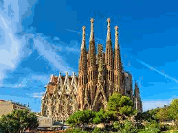

Madryt
|  | |
|---|---|
| powrót Madryt |
Barcelona – miasto w północno-wschodniej Hiszpanii, nad Morzem Śródziemnym, około 110 km na południe od grzbietu Pirenejów i granicy hiszpańsko-francuskiej. Stolica prowincji o tej samej nazwie oraz wspólnoty autonomicznej Katalonii. Drugie co do wielkości miasto Hiszpanii, z liczbą mieszkańców wynoszącą 1 620 809 wewnątrz centrum administracyjnego. Zespół miejski Barcelony wykracza poza centrum administracyjne, z liczbą ludności wynoszącą 4 840 000, jest szóstym co do wielkości zespołem miejskim w Unii Europejskiej. Cała metropolia ma około 5 milionów mieszkańców. Założona jako rzymskie miasto w starożytności, w średniowieczu Barcelona stała się stolicą Hrabstwa Barcelony i Marchii Hiszpańskiej. Dziś miasto jest jednym z wiodących na świecie turystycznych, gospodarczych, targowo-wystawienniczych i kulturalno-sportowych centrów, stając się metropolią o znaczeniu globalnym. Barcelona jest dużym węzłem komunikacyjnym z jednym z największych portów morskich w Europie, międzynarodowym lotniskiem, które obsłużyło w 2017 roku ponad 47 milionów pasażerów, rozbudowaną siecią autostrad i linii kolei dużych prędkości, z połączeniem do Francji i reszty Europy. Barcelona była gospodarzem letnich igrzysk olimpijskich 1992. |